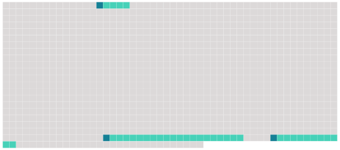

Longueur nb maillons : 3 mentions |
 |
Chaque partie : [24 phrases]
La Commission établit [des règles de confidentialité applicables à toutes les instances et personnes ayant accès aux informations en vertu de la présente convention] [1 phrases]
Nonobstant [les règles de confidentialité adoptées conformément au paragraphe 1 du présent article] , quiconque ayant accès à ces informations confidentielles peut les divulguer dans le cadre de procédures juridiques ou administratives, si l'autorité compétente concernée le demande. |
 |
La ressource peut être téléchargée sur la page Ortolang
Si vous avez des questions ou vous voyez des erreurs, merci d'envoyer un mail à silvia.federzoni89@gmail.com
Site développé par S. Federzoni (contact)